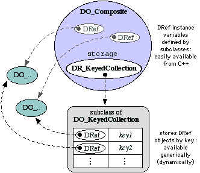

DComposite is
|
|
a public subclass of DO_Collection . . . DO_Object . . . D
Private instance variables
DR_KeyedCollectionstoragewhere instance variables are stored
Public member functions
Inserting, finding, and removing objects
See also the Composite macrobatics for very useful combinations of these functions
voidadd( constDR_String& name, constDRef& obj,ref_t= primary_ref );add an object to the composite's collection, giving the name as a DR_String, and optionally specifying the kind of reference to make to it.
voidadd( const char * name, constDRef& obj,ref_t= primary_ref );add an object to the composite's collection, giving the name as a const char *, and optionally specifying the kind of reference to make to it.
voidadd(DR_Object,ref_t= primary_ref );Inherited from DO_Collection; this version of add is not yet supported because storing an object in a Composite requires a key. Cases when there is no key or any key will do are certainly conceivable, and a future implementation of this function ought to generate a suitably unique key.
DRefget( constDR_String& name );get an object, specifiying name as DR_String
DRefget( const char * name );get an object, specifying name as const char *
DR_voidremove(DR_Stringname );remove the named object
Composite information and aggregation
voidsetStorage(DR_KeyedCollectiondrk,ref_t= primary_ref )Sets the internal storage of the Composite to any DO_KeyedCollection subclass. Allows subclasses to change the default storage, which is DO_Dictionary.
size_tsize( ) constpass through to
storage->size()to return the number of elements in the Composite's collection of instance variables.
DO_Enumerator*elements( )Standard DO_Collection method. returns
storage->elements()so that one may traverse the collection of instance variables generically. Used by OStream subclasses, such as ECI_OStream for streaming.
voidinit( )creates/initializes composite storage.
voiddestroy( )dumps composite storage.
DRefroute(DR_Messagem )Responds to key messages of Composites by invoking their corresponding member functions.
DR_StringtoString( )Implements simple streaming useful only for debugging. Use OStream for real streaming, such as ECI_OStream.
DRefdeepCopy( ) constCreates a new object and calls assign().
voidassign( const DRef& obj )The somewhat unsolved problem with composite assign() is the inability as of yet to connect any DO instance variables to both the composite storage and their native c++ DR declarations...
dcompare_tcompare( constDRef& d ) const
inline virtualDR_ClassDClass( )
{ return Compositeclass; }
staticDR_Class Compositeclass;the class object for generic Composite objects.
Standard DO public member functions
DO_Composite ();
DO_Composite (DRefr);
virtual ~DO_Composite();
As illustrated in the design diagram below, object accessiblity (DO_ objects) from two ways - both dynamic and static - presents a synchronization problem. Dumping a DRef declared as a DO_Composite C++ instance variable does not dump it from the Composite's table.
The DO_ objects pointed to by both can be accessed and sent messages of any sort. But to remove one does not remove it from the other; they must be dealt with simultaneously when objects are created or destroyed. This becomes an actual C++ problem when we realize that objects are keyed by name in the composite's storage, which generally corresponds to the name of the C++ variable....
To deal with this situation, several C++ macros are defined. The argument lists are presented as C++ function argument lists, with types indicating what is expected. The actual macro definitions follow.
DC_replacePtr ( DRef dref_what, D* ptr_with )To be executed in the context of a Composite for which dref_what is a local varable.
- dref_what will be set to point to ptr_with
- the old dref_what is removed from composite storage, using the text of dref_what as the key name
- the new dref_what (that is, ptr_with) is added to the composite storage, using the text of dref_what as the key name.
#define DC_replacePtr(dref_what, ptr_with)\ dref_what.replace(ptr_with);\ DO_Composite::remove( #dref_what );\ DO_Composite::add( #dref_what , dref_what)
DC_replaceRef ( DRef dref_what, DRef dref_with )Similar to DC_replacePtr, but usesdref_with->unsafe_get()as the D * to replace the contents of dref_what.#define DC_replaceRef(dref_what, dref_with)\ dref_what.replace(dref_with.unsafe_get());\ DO_Composite::remove( #dref_what );\ DO_Composite::add( #dref_what , dref_what)
DC_dump ( DRef dr )dumps dr and removes the entry from composite's storage whose key is the text of the argument.#define DC_dump(dr)\ dr.dump();\ DO_Composite::remove( (dr, #dr ) )
DRef DC_get ( DRef var )Looks up var in the composite storage, using the text of the argument as the key. Returns (evaluates to) a DRef, which if not found, will be null. The actual text of this macro is interesting (see below) because there is only one argument to DO_Composite::get(), which is #var. This is the C++ comma operator, which evaluates the left then the right of the comma and evaluates as an expression to the right. By attempting to reference the actual var DRef, the compiler can check that there is a match between the c++ variable name and the text of its key in the composite storage.#define DC_get( var ) DO_Composite::get( (var, #var ) )
DC_remove ( DRef var )Same as DC_get, but removes the object and dumps the DRef var.#define DC_remove( var ) DO_Composite::remove( (var, #var ) )
DC_sync ( var )Replaces the local DRef var with that which is found in the composite's table using the text of var as a key.#define DC_sync( var ) var.replace( get( #var ) )
DC_add ( x )Similar to DC_get and DC_remove for add.#define DC_add(x) add( #x, x)
|

Instance variables declared in a DO_Composite subclass are DR_ objects; these point to their repsective DO_ implementations. In addition, composite maintains a KeyedCollection for generic access to these variables. |
a public subclass of DR_Collection . . . DRef
Standard DRef public member functions
DR_Composite (D *d=0); DR_Composite (const DRef& ref); virtual ~DR_Composite();
note: not virtual functions
DO_Composite *const_get() const; DO_Composite *safe_get(); DO_Composite *safe_set(D* d); DO_Composite *New(); inline DO_Composite *operator->() { return safe_get(); }